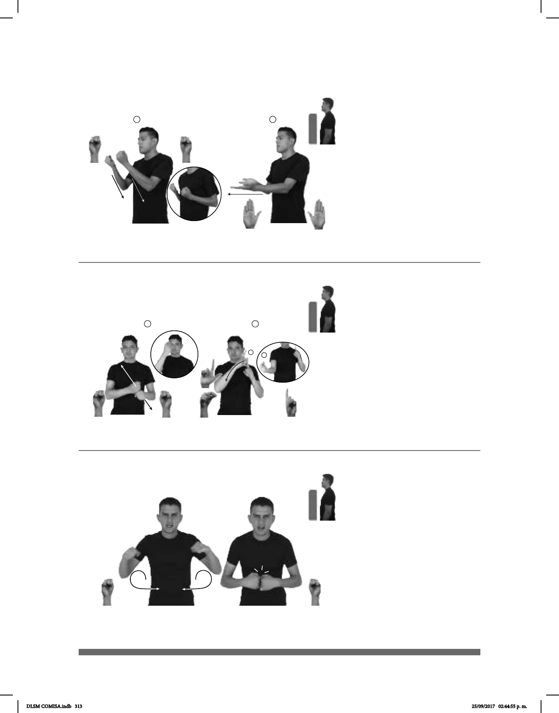

313
1 2
Seña: SS
Seña que pasa de S.1
a B-P.2
Palmas hacia arriba.
A la altura del pecho.
Las manos y los brazos
se mueven formando un arco hacia
atrás y después se mueven recto hacia
el frente.
Simula el abrir un
horno y meter algo para que se hornee.
sust. m. Aparato en el que
se concentra gran cantidad de calor y
sirve para cocinar y calentar alimentos.
(S-58)
pro-NOSOTROS ABRIR-HORNO PARA PASTEL
Nosotros abrimos el horno para meter los pasteles.
1
2
1
2
Seña: SC
MB S.1; II MD 1.1, L.1, P.11
MD palma hacia arriba. MB palma
oblicua hacia la derecha.
MD a la altura del pecho, MB a la
altura del hombro.
MD recto oblicuo hacia dentro
repetidamente.
Cuerpo ladeado hacia la
derecha.
Simula la acción de cortar el
pasto con una hoz.
sust. f. Herramienta agrícola que
sirve para segar cereales, forrajes o maleza
consistente en un hierro plano, curvado como
un mango corto.
(S-59)
SEMANA PASADA PASTO pos-MÍ PAPÁ HOZ CORTAR
La semana pasada mi papá cortó la hierba con la hoz.
Seña: SS
S.1
Palmas hacia dentro.
A los costados del pecho.
Recto hacia el centro.
Cabeza ligeramente
inclinada, ceño fruncido, ojos semicerrados,
nariz fruncida, labios protruidos, cuerpo
ligeramente inclinado hacia el frente.
Es la caracterización del
personaje de Hulk.
Superhéroe verde, grande y
musculoso que aparece en los cómics
publicados por la editorial Marvel.
(S-60)
DIARIO CARICATURA HULK dm-LEONOR pos-SUYO SOBRINO VER
El sobrino de Leonor diario ve la caricatura de Hulk.
DLSM COMISA.indb 313 25/09/2017 02:44:55 p. m.